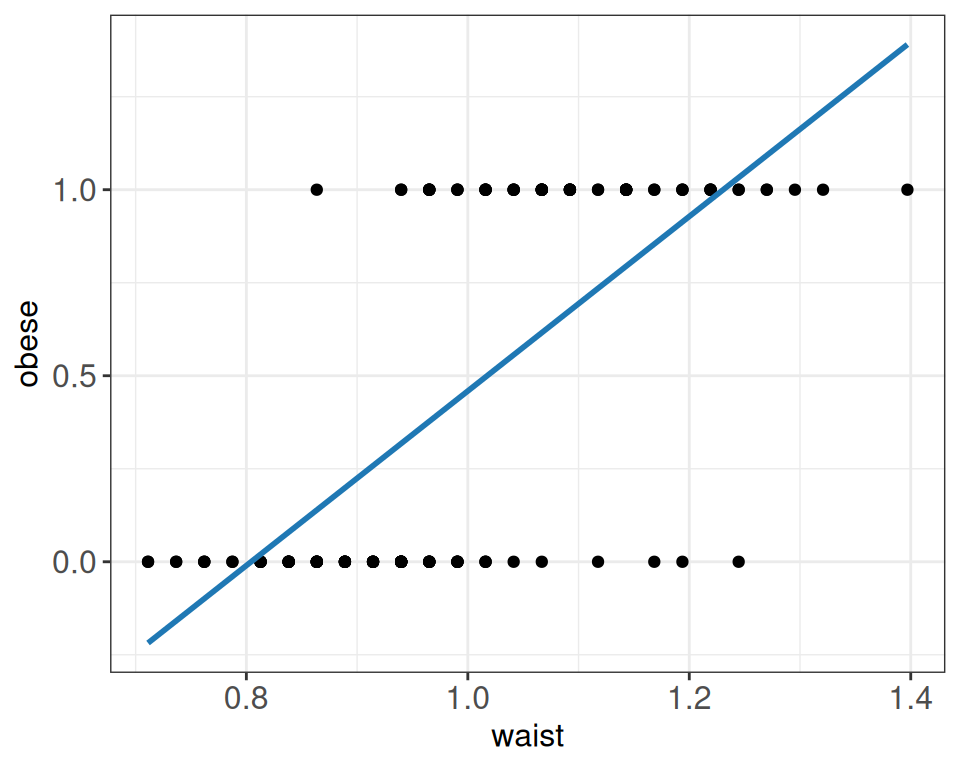
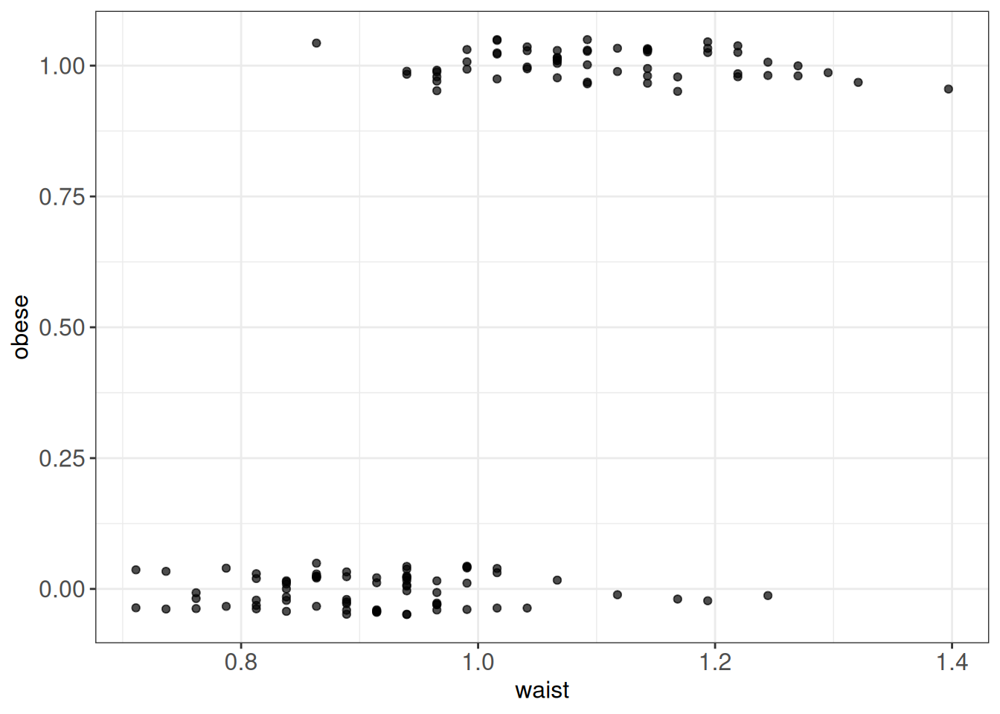
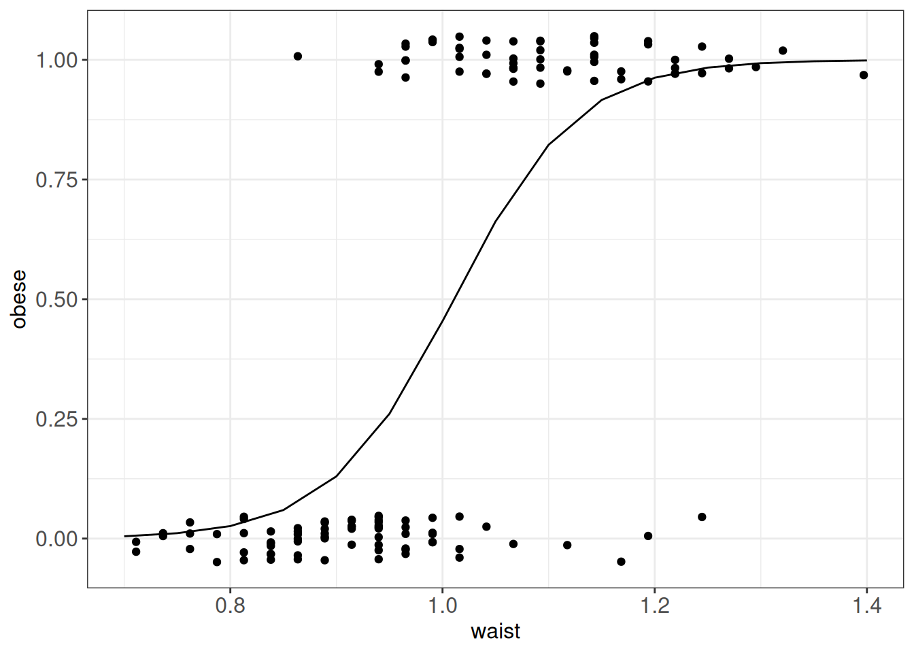
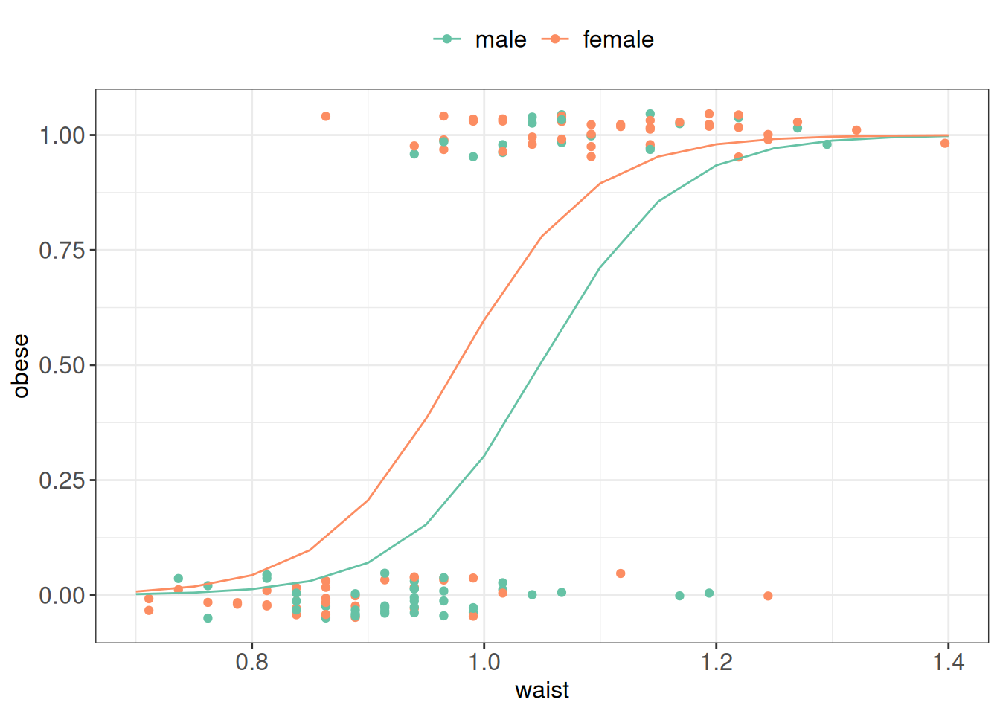

Code
data_diabetes %>%
mutate(obese = as.numeric(obese) - 1) %>%
ggplot(aes(y=obese, x=waist)) +
geom_jitter(width=0, height = 0) +
geom_smooth(method="lm", se=FALSE, color=col.blue.dark) +
my.ggtheme
In linear regression, we described the expected value of the outcome for given values of the predictors.
For example, in simple linear regression,
\[ E(Y\mid X=x)=\beta_0+\beta_1x. \]
More generally,
\[ E(Y_i\mid \mathbf{x}_i) = \beta_0+\beta_1x_{1i}+\cdots+\beta_px_{pi}. \]
This works well for many continuous outcomes, but it is not appropriate for all types of data. For example, probabilities must lie between 0 and 1, while expected counts must be non-negative.
Generalized linear models (GLMs) extend the same framework to such outcomes.
We still construct a linear predictor
\[ \eta_i = \beta_0+\beta_1x_{1i}+\cdots+\beta_px_{pi}. \]
However, instead of assuming that the expected outcome itself is equal to the linear predictor, we connect them through a link function \(g(\cdot)\):
\[ g\left(E(Y_i\mid\mathbf{x}_i)\right)=\eta_i. \]
Equivalently, if we denote the expected outcome by
\[ \mu_i=E(Y_i\mid\mathbf{x}_i), \]
then
\[ g(\mu_i)=\eta_i. \]
A GLM therefore specifies:
Different choices give different models:
| Outcome | Model | Distribution | Link function |
|---|---|---|---|
| Continuous | Linear regression | Normal | Identity |
| Binary | Logistic regression | Binomial | Logit |
| Counts | Poisson regression | Poisson | Log |
The ordinary linear model is a special case. With the identity link,
\[ g(\mu_i)=\mu_i, \]
so that
\[ E(Y_i\mid\mathbf{x}_i) = \beta_0+\beta_1x_{1i}+\cdots+\beta_px_{pi}. \]
For other types of outcomes, the link function allows us to retain the same linear predictor while modelling the expected outcome on an appropriate scale.
So briefly,
For instance, consider a binary outcome, such as obesity status, coded as 0 (No) and 1 (Yes).
data_diabetes %>%
mutate(obese = as.numeric(obese) - 1) %>%
ggplot(aes(y=obese, x=waist)) +
geom_jitter(width=0, height = 0) +
geom_smooth(method="lm", se=FALSE, color=col.blue.dark) +
my.ggtheme
Let’s look again at the binary obesity status data and try to fit logistic regression model using waist as explanatory variable instead of fitting inappropriate here simple linear model.
p1 <- data_diabetes %>%
mutate(obese = as.numeric(obese) - 1) %>%
ggplot(aes(y=obese, x=waist)) +
geom_jitter(width=0, height = 0.05, alpha = 0.7) +
my.ggtheme
# p2 <- data_diabetes %>%
# ggplot(aes(x = obese, y = waist, fill = obese)) +
# geom_boxplot() +
# scale_fill_brewer(palette = "Set2") +
# my.ggtheme
p1
Let’s look again at the binary obesity status data. We will model obesity status (the probability of being obese) using waist as an explanatory variable, this time using logistic rather than simple linear regression.
For a binary response, let
\[ Y_i = \begin{cases} 1 & \text{if the individual is obese},\\ 0 & \text{otherwise}. \end{cases} \]
We denote the probability that individual \(i\) is obese, given their waist measurement \(x_i\), by
\[ p_i = P(Y_i = 1 \mid X_i = x_i). \]
Since \(Y_i\) is coded as 0 or 1, its expected value is equal to this probability:
\[ E(Y_i \mid X_i = x_i) = p_i. \]
For a binary observation,
\[ Y_i \sim \operatorname{Bernoulli}(p_i), \]
which is equivalent to a binomial distribution with one trial.
In logistic regression, we use the logit link to relate the probability \(p_i\) to the linear predictor, thus rewriting linear model to:
\[ \log\left(\frac{p_i}{1-p_i}\right) = \beta_0+\beta_1x_i. \]
The quantity
\[ \frac{p_i}{1-p_i} \]
is called the odds, and its logarithm is the log-odds or logit.
Equivalently, we can express the probability as
\[ p_i = \frac{\exp(\beta_0+\beta_1x_i)} {1+\exp(\beta_0+\beta_1x_i)}. \]
This transformation ensures that the fitted probabilities always lie between 0 and 1.
And here the link function \(log(\frac{p_i}{1-p_i})\) provides the link between the binomial distribution of \(Y_i\) (probabiilty of suffering from obesity) and the linear predictor (waist)
In R we can use glm() function to fit GLM models:
# re-code obese status from Yes/No to 1/0
data_diabetes <-
data_diabetes %>%
mutate(obese = as.numeric(obese) - 1)
# fit logistic regression model
logmodel_1 <- glm(obese ~ waist, family = binomial(link="logit"), data = data_diabetes)
# print model summary
print(summary(logmodel_1))
##
## Call:
## glm(formula = obese ~ waist, family = binomial(link = "logit"),
## data = data_diabetes)
##
## Coefficients:
## Estimate Std. Error z value Pr(>|z|)
## (Intercept) -17.357 2.973 -5.837 5.30e-09 ***
## waist 17.174 2.974 5.775 7.71e-09 ***
## ---
## Signif. codes: 0 '***' 0.001 '**' 0.01 '*' 0.05 '.' 0.1 ' ' 1
##
## (Dispersion parameter for binomial family taken to be 1)
##
## Null deviance: 178.71 on 129 degrees of freedom
## Residual deviance: 102.79 on 128 degrees of freedom
## AIC: 106.79
##
## Number of Fisher Scoring iterations: 5
# plot
ggPredict(logmodel_1) +
my.ggtheme
# to get predictions use predict() functions
# if no new observations is specified predictions are returned for the values of exploratory variables used
# we specify response to return prediction on the probability scale
obese_predicted <- predict(logmodel_1, type="response")
print(head(obese_predicted))
## 3 7 9 11 16 21
## 0.98231495 0.93752915 0.07405337 0.41460606 0.22839680 0.72385967The coefficient estimates are obtained using maximum likelihood estimation. The idea is to find the values of the model coefficients that make the observed data most likely under the model. This is done using numerical optimization, where the algorithm searches over possible coefficient values until it finds the combination that gives the highest likelihood.
As in linear regression, we can test whether an explanatory variable is associated with the outcome by testing whether its regression coefficient is zero.
For a coefficient \(\beta_j\), we test
\[ H_0:\beta_j=0 \]
against
\[ H_a:\beta_j\neq0. \]
In logistic regression, individual coefficients are commonly tested using a Wald test. The Wald statistic is the estimated coefficient divided by its estimated standard error:
\[ W = \frac{\hat{\beta}_j - 0} {e.s.e.(\hat{\beta}_j)}. \]
Under the null hypothesis, for sufficiently large samples, the Wald statistic approximately follows the standard normal distribution:
\[ W \sim N(0,1). \]
This is analogous to the t-test for a coefficient in linear regression. In the output from summary(glm(...)), this statistic is reported as the z value.
In our example, we want to test whether waist is associated with the probability of being obese:
\[ H_0:\beta_1=0. \]
From the fitted model,
\[ \hat{\beta}_1 = 17.174 \]
with estimated standard error
\[ e.s.e.(\hat{\beta}_1)=2.974. \] Therefore,
\[ W = \frac{17.174}{2.974} \approx 5.77. \]
We can calculate the corresponding two-sided P-value from the standard normal distribution:
2 * pnorm(abs(5.77), lower.tail = FALSE)
## [1] 7.927153e-09The resulting P-value is very small, providing sufficient evidence to reject the null hypothesis and conclude that waist is associated with the probability of being obese.
Another way to test whether an explanatory variable contributes to a GLM is to compare two nested models:
For example, to test the contribution of waist, we compare
\[ \text{reduced model: } \operatorname{logit}(p_i)=\beta_0 \]
with
\[ \text{full model: } \operatorname{logit}(p_i)=\beta_0+\beta_1x_i. \]
The comparison is based on the deviance, which measures lack of fit: smaller deviance indicates a better-fitting model.
The likelihood-ratio test uses the difference in deviance between the two models:
\[ D_{\text{reduced}} - D_{\text{full}}. \]
Under the null hypothesis that the additional term does not improve the model, this difference approximately follows a chi-squared distribution. The degrees of freedom correspond to the difference in the number of estimated parameters between the models.
For our example, the intercept-only model has deviance
\[ D_{\text{reduced}} = 178.71, \]
while the model including waist has deviance
\[ D_{\text{full}} = 102.79. \]
The reduction in deviance is therefore
\[ 178.71 - 102.79 = 75.92. \]
Adding waist introduces one additional parameter. Under the null hypothesis, the deviance difference approximately follows a chi-squared distribution with 1 degree of freedom:
\[ \Delta D \sim \chi^2_1. \]
For our data, the observed deviance difference is
\[ \Delta D = 75.92. \]
The corresponding P-value is very small, providing strong evidence that including waist improves the fit of the model.
We can perform this comparison directly in R:
logmodel_0 <- glm(
obese ~ 1,
family = binomial(link = "logit"),
data = data_diabetes
)
anova(logmodel_0, logmodel_1, test = "Chisq")
## Analysis of Deviance Table
##
## Model 1: obese ~ 1
## Model 2: obese ~ waist
## Resid. Df Resid. Dev Df Deviance Pr(>Chi)
## 1 129 178.71
## 2 128 102.79 1 75.915 < 2.2e-16 ***
## ---
## Signif. codes: 0 '***' 0.001 '**' 0.01 '*' 0.05 '.' 0.1 ' ' 1The coefficients in logistic regression describe changes in the log-odds of the outcome. Because log-odds are difficult to interpret directly, we often exponentiate the coefficients:
\[ OR = \exp(\hat{\beta}). \]
The resulting quantity is an odds ratio.
For a numerical predictor, the odds ratio describes the multiplicative change in the odds of the outcome associated with a one-unit increase in the predictor, with other variables in the model held constant.
In our example, waist is measured in metres. Therefore, \(\exp(\hat{\beta}_1)\) would describe the change in odds associated with a 1 metre increase in waist circumference, which is not a useful unit for interpretation.
Instead, we can consider an increase of 10 cm, corresponding to 0.1 metres:
\[ \exp(0.1\hat{\beta}_1) = \exp(0.1 \times 17.174) \approx 5.6. \]
Thus, a 10 cm increase in waist circumference is associated with approximately 5.6 times higher odds of being obese.
In general:
The further an odds ratio is from 1, the larger the estimated association on the odds scale. However, the size of an odds ratio alone does not provide evidence that the relationship is causal.
As in multiple linear regression, we can extend a logistic regression model by including additional explanatory variables. These can be numerical, binary or categorical.
For example, we can investigate whether gender is associated with the probability of being obese after accounting for waist:
# fit logistic regression including waist and gender
logmodel_2 <- glm(
obese ~ waist + gender,
family = binomial(link = "logit"),
data = data_diabetes
)
# print model summary
print(summary(logmodel_2))
##
## Call:
## glm(formula = obese ~ waist + gender, family = binomial(link = "logit"),
## data = data_diabetes)
##
## Coefficients:
## Estimate Std. Error z value Pr(>|z|)
## (Intercept) -18.2756 3.1077 -5.881 4.08e-09 ***
## waist 17.4401 3.0523 5.714 1.11e-08 ***
## genderfemale 1.2335 0.5228 2.359 0.0183 *
## ---
## Signif. codes: 0 '***' 0.001 '**' 0.01 '*' 0.05 '.' 0.1 ' ' 1
##
## (Dispersion parameter for binomial family taken to be 1)
##
## Null deviance: 178.708 on 129 degrees of freedom
## Residual deviance: 96.877 on 127 degrees of freedom
## AIC: 102.88
##
## Number of Fisher Scoring iterations: 6
# plot fitted probabilities
ggPredict(logmodel_2) +
my.ggtheme +
scale_color_brewer(palette = "Set2")
The model can be written as
\[\operatorname{logit}(p_i) = \beta_0 + \beta_1 \,\text{waist}_i + \beta_2 \,\text{gender}_i\]
The interpretation follows the same principle as in multiple linear regression: each coefficient describes the association with the outcome while the other variables in the model are held constant.
Thus, the coefficient for gender describes the association between gender and the probability of being obese for individuals with the same waist circumference.
GLMs can also be used for count data, for example:
For count data, a common starting point is to assume that
\[ Y_i \sim \operatorname{Poisson}(\mu_i), \]
where
\[ \mu_i = E(Y_i \mid \mathbf{x}_i) \]
is the expected count for observation \(i\).
In Poisson regression, we use the log link to relate the expected count to the linear predictor:
\[ \log(\mu_i) = \beta_0+\beta_1x_{1i}+\cdots+\beta_px_{pi}. \]
Equivalently,
\[ \mu_i = \exp\left( \beta_0+\beta_1x_{1i}+\cdots+\beta_px_{pi} \right). \]
The log link ensures that the fitted expected counts are always positive.
Hypothesis testing and comparison of nested models follow the same general logic as for logistic regression. Individual coefficients can be tested using Wald tests, while models can be compared using differences in deviance.
Example 16.1 (Number of cancer cases) Suppose we wish to model \(Y_i\), the number of cancer cases in geographical region \(i\) in Glasgow.
We have data from 271 small regions, together with information on:
Y_all: observed number of cases of all types of cancer in the region in 2013;E_all: expected number of cancer cases based on the population size and demographic structure of the region;pm10: air pollution;smoke: percentage of people who smoke;ethnic: percentage of people who are non-white;log.price: natural logarithm of average house price;easting and northing: geographical coordinates.The regions differ in population size and demographic structure. We therefore do not want to compare the raw numbers of cancer cases directly.
Instead, we include E_all as an offset. The model becomes
\[ \log(\mu_i) = \log(E_i) + \beta_0+\beta_1x_{1i}+\cdots+\beta_px_{pi}. \]
Here, \(\log(E_i)\) is included with its coefficient fixed at 1. It accounts for the number of cases that would already be expected in each region based on its population and demographic structure.
Equivalently,
\[ \mu_i = E_i \exp\left( \beta_0+\beta_1x_{1i}+\cdots+\beta_px_{pi} \right). \]
We can fit the model using glm() with the Poisson family:
# Read in and preview data
cancer <- read.csv("data/lm/cancer.csv")
head(cancer)
## IG Y_all E_all pm10 smoke ethnic log.price easting northing
## 1 S02000260 133 106.17907 17.8 21.9 5.58 11.59910 26.16245 66.96574
## 2 S02000261 38 62.43131 18.6 21.8 7.91 11.84940 26.29271 67.00278
## 3 S02000262 97 120.00694 18.6 20.8 9.58 11.74106 26.21429 67.04280
## 4 S02000263 80 109.10245 17.0 14.0 10.39 12.30138 25.45705 67.05938
## 5 S02000264 181 149.77821 18.6 15.2 5.67 11.88449 26.12484 67.09280
## 6 S02000265 77 82.31156 17.0 14.6 5.61 11.82004 25.37644 67.09826
# Fit Poisson regression
epid1 <- glm(
Y_all ~ pm10 + smoke + ethnic + log.price +
easting + northing + offset(log(E_all)),
family = poisson,
data = cancer
)
print(summary(epid1))
##
## Call:
## glm(formula = Y_all ~ pm10 + smoke + ethnic + log.price + easting +
## northing + offset(log(E_all)), family = poisson, data = cancer)
##
## Coefficients:
## Estimate Std. Error z value Pr(>|z|)
## (Intercept) -0.8592657 0.8029040 -1.070 0.284531
## pm10 0.0500269 0.0066724 7.498 6.50e-14 ***
## smoke 0.0033516 0.0009463 3.542 0.000397 ***
## ethnic -0.0049388 0.0006354 -7.773 7.66e-15 ***
## log.price -0.1034461 0.0169943 -6.087 1.15e-09 ***
## easting -0.0331305 0.0103698 -3.195 0.001399 **
## northing 0.0300213 0.0111013 2.704 0.006845 **
## ---
## Signif. codes: 0 '***' 0.001 '**' 0.01 '*' 0.05 '.' 0.1 ' ' 1
##
## (Dispersion parameter for poisson family taken to be 1)
##
## Null deviance: 972.94 on 270 degrees of freedom
## Residual deviance: 565.18 on 264 degrees of freedom
## AIC: 2356.2
##
## Number of Fisher Scoring iterations: 4As in logistic regression, coefficients in Poisson regression are often easier to interpret after exponentiation:
\[ RR = \exp(\hat{\beta}). \]
The resulting quantity is a rate ratio.
For a numerical predictor, the rate ratio describes the multiplicative change in the expected rate associated with a one-unit increase in the predictor, while the other variables in the model are held constant.
For example, suppose we are interested in the association between air pollution and cancer incidence. The estimated coefficient for pm10 is
\[ \hat{\beta}_{pm10} = 0.0500. \]
Since this coefficient is positive, higher pm10 values are associated with a higher expected cancer rate.
Exponentiating the coefficient gives
\[ \exp(0.0500) \approx 1.05. \]
Thus, a one-unit increase in pm10 is associated with approximately a 1.05-fold, or 5% higher, expected cancer incidence rate, while the other variables in the model are held constant.